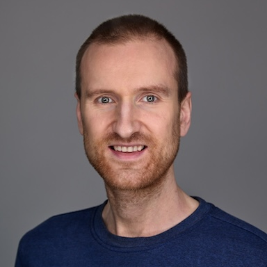

Wouter Kwakernaak

Wouter Kwakernaak is an independent software engineering professional offering consulting services in the field of information technology. He is an expert in software architecture, cloud infrastructure, data engineering, DevOps and more. Services can be performed remotely or on-site in the area of Amsterdam, The Netherlands. Interested? Contact him via LinkedIn.